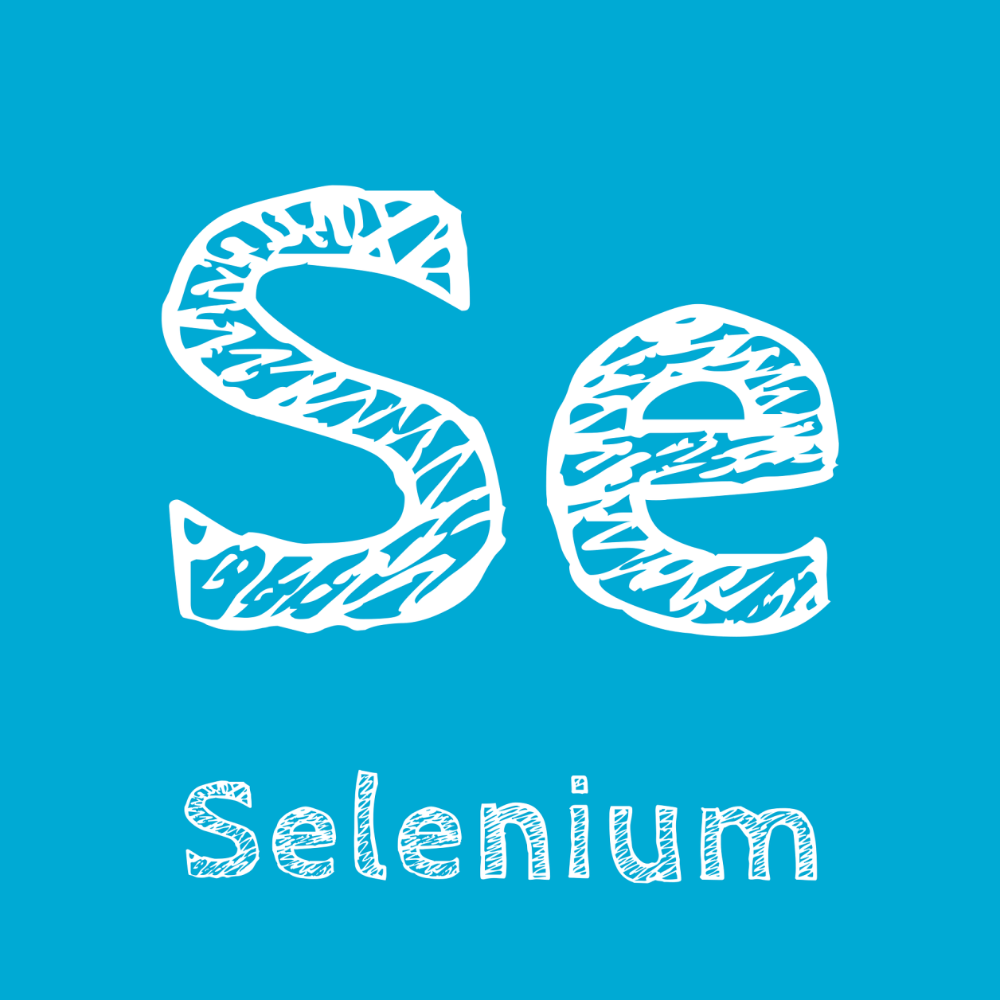
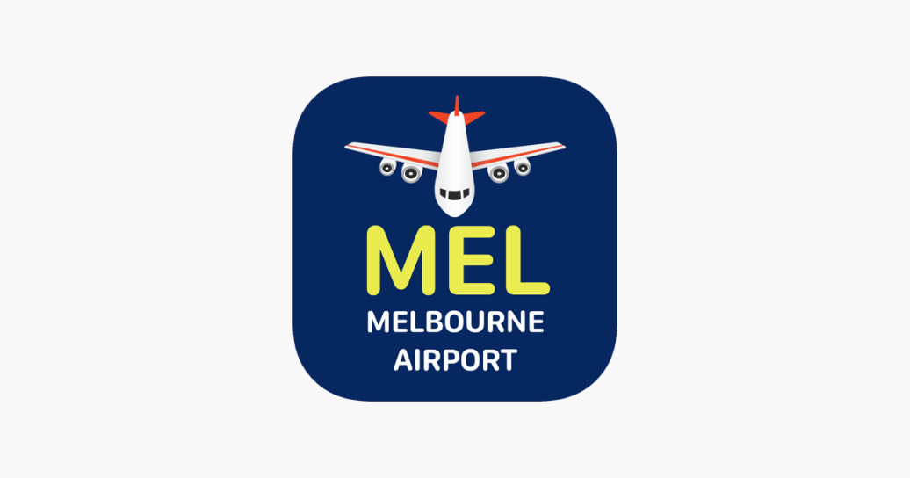

Offline Website SoftwareHaris Anees
10+
Institutions Processed
900+
Courses Scraped
100%
Project Deliverables Met

During my Summer 2025 co-op term, I worked as a Database Developer at the Arrell Food Institute in Guelph, Ontario.
My main focus was on building and managing a Azure SQL database containing over 900 learning assets related to food systems and sustainability.
In order to get these courses, I relied on various python libraries such as BeautifulSoup and Selenium in order to efficiently scrape courses.
During my co-op at the Arrell Food Institute,
I worked with Jeanna Rex, Education Lead, and Dr. Amy Proulx, a Faculty Research Lead, Culinary Innovation
and Food Technology at Niagara College . They have deep experience in agriculture, and our daily stand-up
meetings helped me understand project goals, clarify tasks, and stay on track. Working with them gave me a
better sense of how agriculture and sustainability projects are run in practice.
My goals for this work term that I wanted to focus on was:
1. Leadership:
(Develop the ability
to better at solve problems on my own by finding and using resources when I get stuck. )
2.
Problem solving skills:
(Develop the ability to better at solve problems on my own by finding and
using resources when I get stuck.)
3. Information Literacy
(Develop a stronger sense at
finding reliable and useful information when collecting learning assets.)
Yes, I did develop my goals in relation to my job tasks. For example, during the first week of my co-op, I created a Terms of Reference document outlining the project goals and deliverables, which strengthened my leadership skills by taking initiative and ensuring the goals align with expectations. For problem-solving, I faced challenges when scraping course data from different institutions, since each had unique HTML structures, and finding solutions improved my adaptability. Finally, I often needed to find, evaluate, and apply information related to agriculture and sustainability, which directly supported my goal of enhancing information literacy skills.
The skills I wanted to learn were web scraping, cloud-based technologies like Azure, and communication. I was able to strengthen all three during my work term. These skills will benefit my next work experience by giving me the ability to handle technical challenges with web data, confidently work with cloud platforms, and communicate effectively with team members in the future.
Brock Solutions
During my Fall 2025 co-op term, I worked as a Software Developer at Brock Solutions located in Kitchener, Ontario. This company primarily deals with assisting and implementing features for airports such as a Baggage Handing System.
My main focus was maintaining and debugging SmartSort Services for both Omaha and Melbourne Airport. This included the notification services, reporting service and much more.
In order to maintain these systems, it required knowledge of SQL and C# programming,.

During my time as a Software Developer at Brock Solutions, I had a few projects I worked on. For example, I was tasked with fixing and debugging the notification service at Omaha and Melbourne Airport. The notification service essentially allows user is able to subscribe to a fault (warning) and receive notification via Email or SMS. They would receive a notification if service happened to be down for an extended period of time. Other tasks involved fixing reports that were not showing the correct value through their SQL database. These tasks required skills in C#, SQL, problem-solving, and communication skills.
My goals for this work term that I wanted to focus on was:
1. Problem Solving:
(Develop
stronger problem-solving skills by identifying and resolving technical or process issues that arise when
working on any component of SmartSort. )
2. Written Communication
(Trying to strengthen my ability to communicate technical information through my writing in Teams or
during day-to-day discussions with team members and clients.)
3. Personal Organization/Time
Management
(Work on developing stronger personal organization and time management skills to effectively
prioritize tasks, meet deadlines, and balance multiple responsibilities during my co-op term.)
Yes, I did develop my goals in relation to my job tasks. For example, whenever I was dealing with any SmartSort components, I would always break down the problem into smaller steps. Afterwards, I would look in the documentation within the company SharePoint to find solutions and build it from there. This enhanced my problem-solving skills as I was able to independently find solutions. For written communication, I always tried to provide the entire context when explaining a problem. To better explain the issue, I provided any evidence and tests in order to ensure that we could find a solution quickly. Finally, I believe I improved my time management skills as I always made it a priority to log any tasks or meetings on my checklist in order to be more organized. This checklist was a great way for me to understand all my responsibilities which in turn, made me more efficient.
The skills I wanted to learn were large system scale integration, general Git procedures in a work-based environment, and improving my problem-solving skills. I was able to strengthen all three during my work term. These skills will benefit my next work experience by giving me the ability to handle technical challenges with any large scale systems, confidently work peers and sharing work through any version control system, and independently find solutions to a problem with better debugging techniques which were learned during my time at Brock Solutions.
Offline Website Software